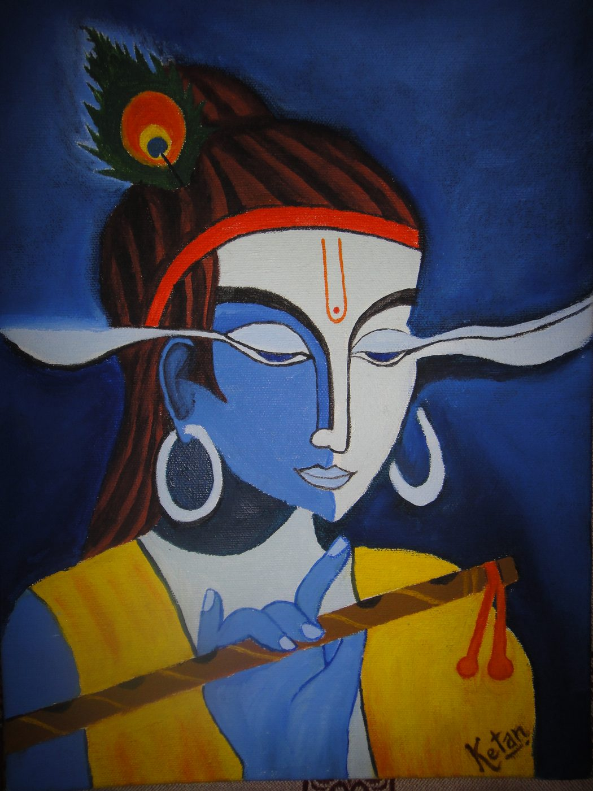
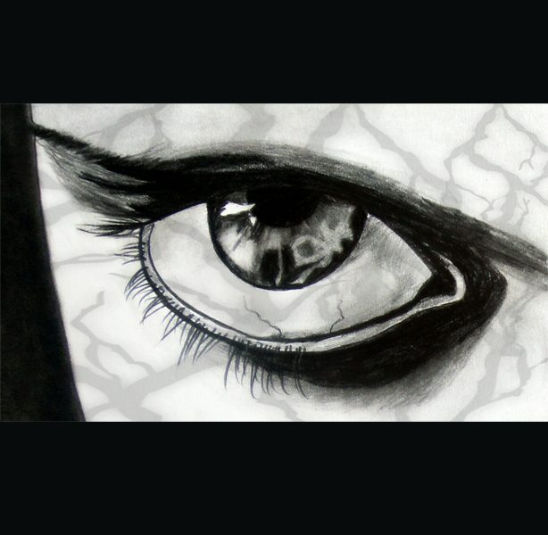
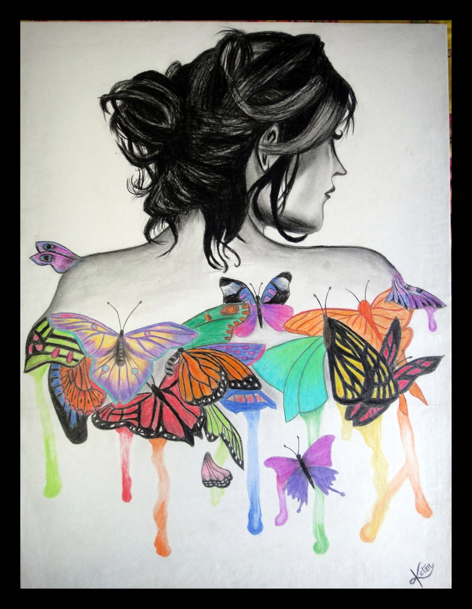
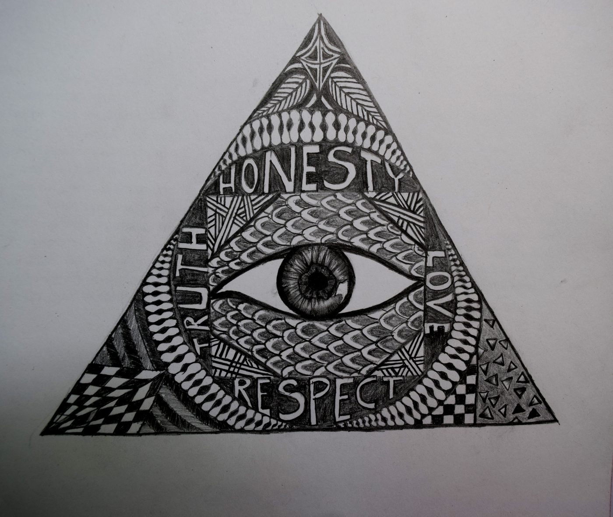
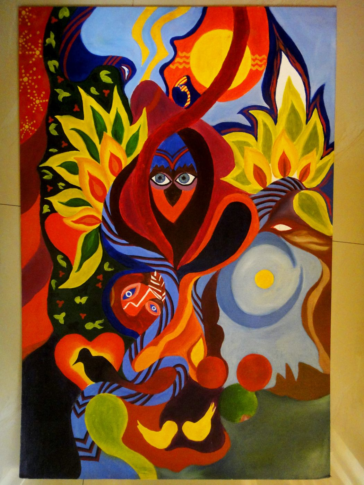
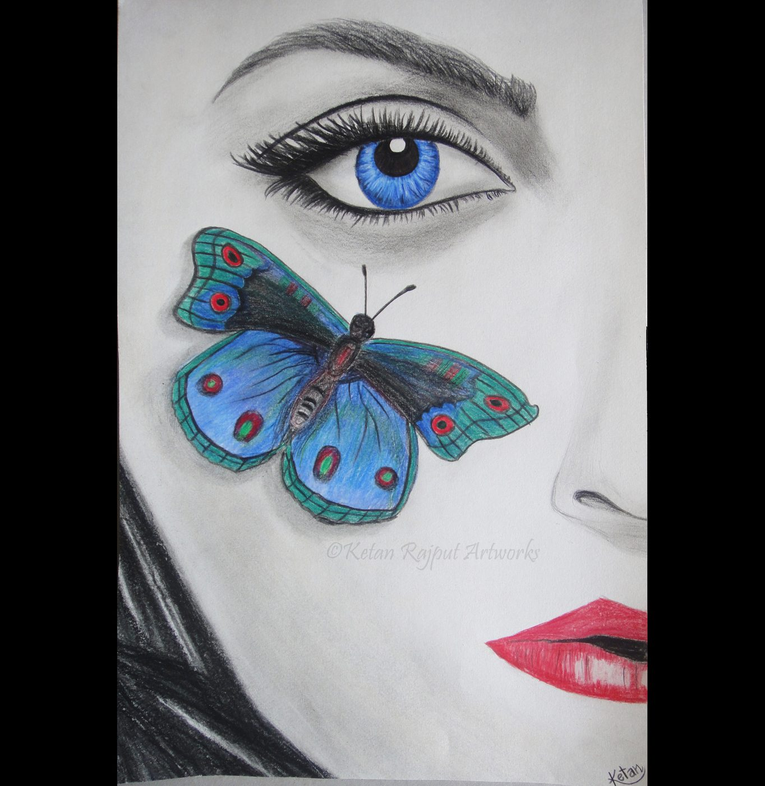

Fort Lauderdale, Florida
KETAN
RAJPUT
I am a photographer
Product designer by trade. Painter, photographer, DJ, and yogi by disposition. I put unlike things next to each other until the seam disappears.
Selected
01 / Everything at onceNot sorted by discipline. That's the point.








Photography
02 / Nature, wildlife, travel8.5M
Views on a single frame
One photograph, released free on Unsplash, downloaded more than thirty-five thousand times and viewed over eight and a half million. Shooting since 2007.


Artwork
03 / Charcoal, graphite, colour pencil, acrylicTwenty years of it. Devotional figures rendered in flat modernist planes, photoreal graphite, and whatever the hand wanted that year.



Design
04 / Product & UXSenior product and UX design in telehealth, most recently on AI-assisted triage. I also run Align Rock, a consultancy for teams that need the thing to exist, work, and look like someone cared.
Travel & Adventure
05 / ExperiencesPlaces, people, and the habit of making sure no week repeats itself.


Also
06 / The rest of it- Music mixing
- Salsa
- Bachata
- Merengue
- Pickleball
- Fish keeping
- Gardening
- Yoga
- Mentoring
- Nonprofit work
- DIY
- Animals
- Ancient civilisations
- Ayurveda
- Creative solutioning
Roots
All of it grows out of the same place: family, a daily practice of yoga and stillness, and an upbringing in India that keeps turning up in the work whether I plan it or not.
Let's talk.
For consulting, a shoot, a commission, or something you think I'd enjoy.
hello@alignrock.com